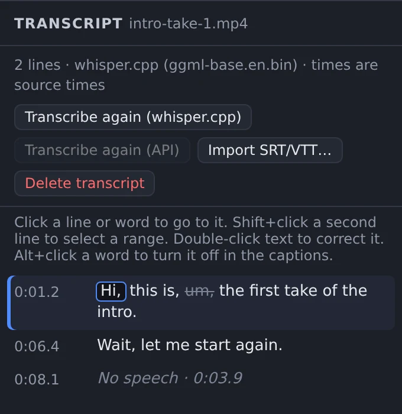
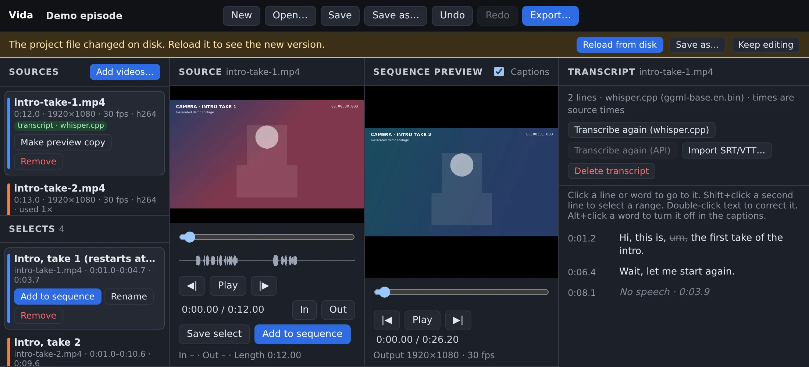

The agent makes the draft. You make the decisions.
Vida is a small local video editor for episodes made from several recordings. An agent writes an editable project file. You open the same file in the Vida editor, look at each cut, and change what you do not like.
Real screenshot of Vida. The agent wrote the sequence and the selects. The footage is generated demo footage with a synthetic voice. The transcript is from whisper.cpp.
How it works
One project file goes from the agent to you, in order.
1 · AgentWrites a draftIt reads the transcripts and writes clips and named selects to Episode (agent draft).vida.json.
2 · AgentValidates itvida validate reads each source with ffprobe and names each bad clip. The agent fixes every error.
3 · YouReview in the editorOpen the draft in Vida. Change takes, trim, split, reorder, and correct caption words.
4 · You or the agentExportOne MP4 with SRT and VTT captions. Caption times move with each cut.
Vida does not choose the edits. The agent proposes the cuts, and it does not always choose the best take. Vida checks that each cut is possible and renders it exactly. You decide what is final.
Review and adjust
The draft is not a finished video. It is a project that you can edit.
Each source keeps its transcript. Click a line or a word to go to that time.
Double-click a word to correct it. The word keeps its time, so the captions stay in sync.
Alt+click a filler word to remove it from the captions. It stays in the transcript.
The agent can propose ranges as named selects. You add the ones that you want with one click.

whisper.cpp heard “Bye”. A person corrects it to “Hi” and turns off “um”.
Safe hand-off
The agent and you can work on the same project.
Vida checks the project file every 2 seconds. When the file changes, a bar shows Reload from disk.
After a reload, Undo brings back your earlier version.
Save sends the revision of your version. If the file on disk is newer, the save fails and the file stays the same.
This check is not a file lock. Agents write to a new draft file, not to a file that you have open.

An agent added a select while the project was open in Vida. The person decides when to reload.
Features
A small editor for one job: cut several recordings into one episode.
Several takes
Import screen recordings and camera files. Vida reads them in place. It does not copy, change, or delete them.
Non-destructive cuts
Trim to the frame, split at the playhead, drag to reorder, and remove clips. Undo and Redo.
Transcripts and captions
Cut by transcript lines. Correct each word. Silent parts show as “No speech” rows.
Named selects
Keep good ranges for later with a name. An agent can propose ranges this way.
Audio waveforms
See speech and silence in the source view and on each clip before you cut.
Keyboard editing
IO mark, A add, N select, S split, [] trim, JKL play.
Saved JSON projects
A .vida.json file keeps your edit decisions and transcripts. People and agents can read and write it.
Headless CLI
validate, captions, and export work without the browser and use the same timeline code.
MP4, SRT, VTT
H.264 and AAC video with captions. Audio stays in sync after many cuts.
For agents
An agent uses the same project format and the same rules as the editor.
Validation names each bad clip, for example a clip that ends after its video.
captions and export validate first. If the project is not valid, they write nothing.
Export never writes to the path of a source file.
Agents must not invent transcript text. They use whisper.cpp, the API provider, or SRT/VTT files.
This website is only a homepage. The editor is not hosted. It runs on your computer.
What stays on your computer
local
The editor server listens on 127.0.0.1 only. Other computers cannot connect to it.
FFmpeg reads your files and renders the export on your computer.
There are no accounts, no cloud storage, and no publishing.
With local whisper.cpp, the audio stays on your computer.
What can leave your computer
optional
You can set up an OpenAI-compatible transcription API. When you click Transcribe (API), Vida extracts the audio of that video and uploads it to the provider that you configure.
Vida does not upload the picture. Vida itself makes no other network requests.
To upload nothing, use whisper.cpp or import SRT or VTT files that you already have.
While the server runs, any program on your computer can use it. It can list your folders, read video files, and write files where your user account can write. Run Vida only on a computer that you trust, and stop it when you do not use it.
Install
Vida is free and open source under the MIT License.
You need
Node.js 20 or newer.
FFmpeg with ffprobe. On macOS: brew install ffmpeg.
A Chromium-based browser. Other browsers are not tested.
Optional: whisper.cpp and a model, for local transcripts.
Terminal
git clone https://github.com/zainfathoni/vida.git
cd vida
npm start # opens http://localhost:5178/
Vida was tested only on Linux, in Chromium, with generated test videos. It was not tested on macOS, Windows, or Safari, or with real camera and screen recordings. The API transcription option was tested only with a mock API. Keep backups of your project files.
Vida does not do multicam, transitions, audio level controls, automatic vertical crops, or motion graphics. It has no AI features of its own: the agent that you use makes the suggestions.